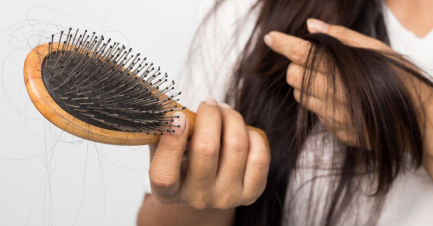

7 июля 2020
1227
Cтоп паника или, что делать, когда выпадают волосы?
Если вы заметили, что волосы стали выпадать, не стоит паниковать и сильно
расстраиваться. Благодаря корейской
натуральной косметике вы быстро остановите этот процесс, сделаете ваши волосы
крепкими, густыми и красивыми. Шампуни,
бальзамы, маски, масла и ...